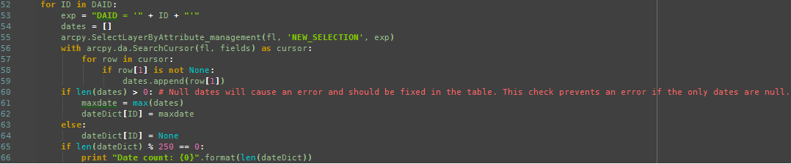

Table to Feature Class Join and Export
This script was created while working for the Ontario Ministry of Transportation(MTO) Eastern Region. The region maintains a database of culverts in Eastern Ontario, which require regular inspections. These inspections are stored in a table related to the main culvert feature class, and this information needs to be exported to an online map service. However, because the service does not support joined tables, it was necessary to create a script that will select the latest inspection and join that information to the shapefile that gets exported. This was not an easy task, since the feature class contains over 10,000 culverts, each culvert can have multiple associated inspections, and the fact that ArcMap does not support SQL subqueries. Ultimately, my solution was to populate a list of unique culvert IDs, extract the most recent inspection date, and then create a dictionary with the IDs as the key and the date as the dates as values. This finally allowed me to build an SQL query that would select the correct feature and its most recent inspection, and then export a shapefile from that selection.
Note: lines 90-120 were taken from a prexisting export script for simpler features and were not written by me.
Folder Renamer, Based on Attribute
This relatively straightforward script was also written to solve a problem related to culvert inspections. The region recently transitioned from an old culvert ID system (CVIDs) to a new one (DAIDs), which meant that external contractors were often using the old system. In this case, the contractor sent photos of culverts organized by the CVID. The script uses these folder names to find the associated DAID, and the OS module is subsequently used to rename the folders so that they could be properly imported to the existing folder structure.